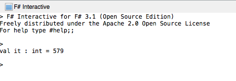

Duration
10 minutes
Lab Goals
The primary goal of this lab will be to start working with F# option types to sum a list of numbers.
- First, create an F# library project and open the script.fsx file.
- Copy the the list of inteter option types and sum the values.
- Run the code in the REPL.

Steps
Option Types
- Start a new F# library project and open the script.fsx file.
- Make sure your REPL window is open and has been reset.
- Paste the following list into the script file:
- Filter the list of integer option types using the
List.filterfunction with theIsSomefunction to create a list that only contains options with values. - Use the
List.mapfunction with theValuefunction to create a list of integers from the option type values. - Sum the resulting list.
[None; Some(147); Some(12); Some(38); None; Some(41); Some(59); Some(60); Some(73); None; Some(27); Some(43); Some(15); None; Some(35); Some(4); Some(10); Some(15)]